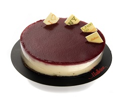

Pastelería Délice
Inicio
Nosotros
Productos
Eventos
Contacto
Tarta de fambruesas
Tarta de fambruesas
Tarta de limón

Tarta cheescake
Tarta de limón
Tarta cheescake
Tarta Milhojas
Tarta Milhojas
Tartaleta de café y nueces de pecan
Tarta tres chocolates
Tartaleta de café y nueces de pecan
Tarta tres chocolates
Tarta Sácher
Tarta Sácher
Tarta Saint Honoré
Tarta Mont Blanc
Tarta Saint Honoré
Tarta Mont Blanc
Aviso legal/Politica de cookies
@Author: Celia Rubio Pais- 1º de DAW